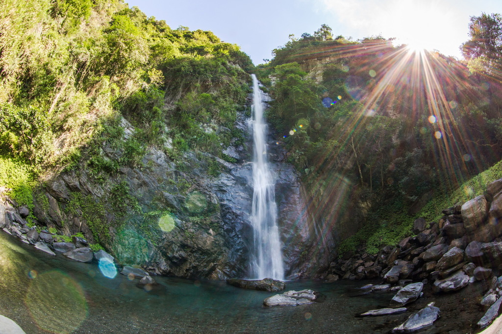
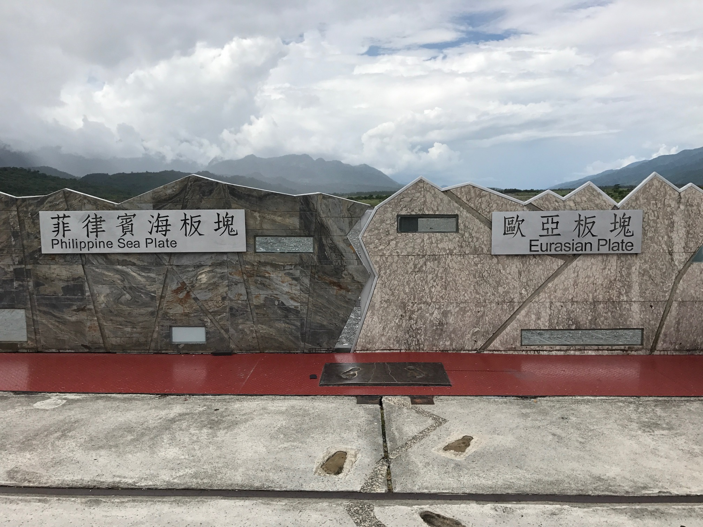
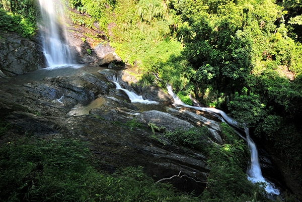
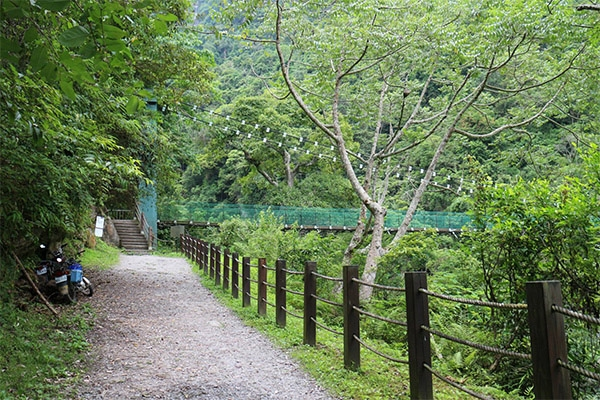
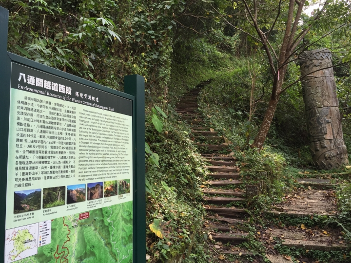
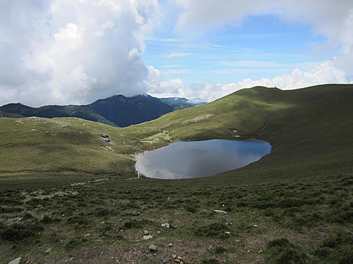
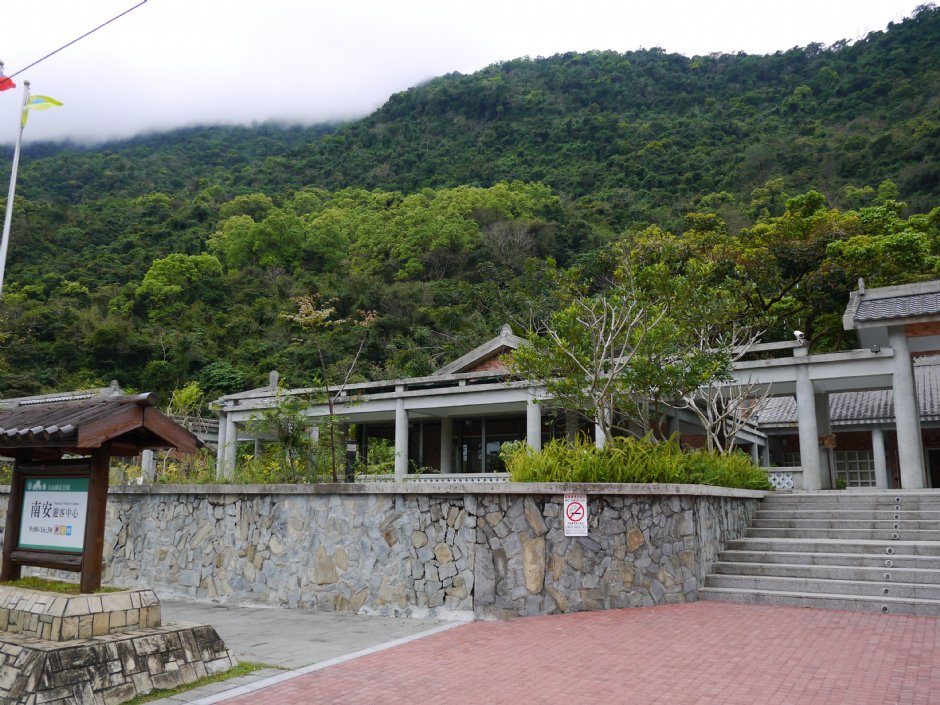

|
玉山國家公園南安部落/清水部落花蓮縣卓溪鄉 玉山國家公園於西元1985年成立是台灣第二個國家公園，位於台灣中心位置，範圍涵蓋南投縣、嘉義縣、高雄市和花蓮縣，總面積約達105490公頃，是台灣面積最大的國家公園，地形以高山及河谷為主，橫跨玉山山脈和中央山脈等山系，包含海拔3952公尺擁有「東北亞第一高峰」美稱的玉山主峰、玉山東峰、玉山北峰、玉山南峰、玉山西峰和八通關山等玉山山系以及秀姑巒山、關山、三叉山、向陽山和新康山等中央山系共30座，天然植被也隨著海拔的變化從亞熱帶、溫帶至寒帶，豐富的地理景觀塑造最珍貴的資源寶藏和生態環境。 |
|  |
南安瀑布南安部落/清水部落花蓮縣卓溪鄉 南安瀑布位在南安部落西側，高約50公尺，係集岩上山澗而成，急奔而下，美麗壯觀。 |
|  |
歐亞及菲律賓板塊交界紀念碑無花蓮縣卓溪鄉秀姑巒溪 臺灣島位於歐亞大陸板塊和菲律賓海板塊交界處，菲律賓海板塊往西北方移動撞擊歐亞大陸板塊。約在2000~500萬年前，南中國海板塊隱沒到菲律賓海板塊之下，當板塊深入地底時，熾熱的岩漿竄升到菲律賓海板塊之上，形成一系列的火山島，也就是今日所見的海岸山脈及綠島、蘭嶼、小蘭嶼等火山島嶼。 |
|  |
山風瀑布南安部落/清水部落花蓮縣卓溪鄉 山風瀑布位於瓦拉米步道入口二公里處，山風一號吊橋懸於石崖間，清楚可見河流對岸岩石紋理，腳下的溪流淙淙流瀉，令人膽戰心驚。 |
|  |
瓦拉米步道南安部落/清水部落花蓮縣卓溪鄉 位於玉山公園園區內的瓦拉米步道，全長十四公里，好像一條鑲在大里仙山陡直山壁的腰帶，湍急的拉庫拉庫溪位於正下方。 |
|  |
八通關古道南安部落/清水部落花蓮縣卓溪鄉(玉山國家公園內) 同治十三年，日本藉口牡丹社番殺害琉球海難漁民，而大舉進犯，清廷派船政大臣沈葆楨來台交涉。沈葆楨力主開山撫番，希望廣招內地漢人至後山（東部）開墾，以充實全島，防範外國人侵擾。於是兵分三路，自北、中、南三線開闢道路通達東部。光緒元年(1875年)由總兵吳光亮率領飛虎軍，由林圯埔(南投竹山)經東埔、八通關，到璞石閣(花蓮玉里)，於歷時十個多月完成中路，全長265華里(約152公里)，即今所稱「八通關古道」。 |
|  |
新康山南安部落/清水部落花蓮縣卓溪鄉(玉山國家公園內) 新康山位於花蓮縣卓溪鄉，被稱為『台灣十峻之一』，新康山標高為3331公尺，原本稱做『新關山』；新康山是中央山脈主脊往東延伸的支稜中，成為山勢最為高聳的一座，也是台灣東側最高的山峰，其寬廣壯觀的山是佇立在台灣東面；由於新康山山脈為南北走向，民若若從東西向一望便可看到山頂上一顆顆的巨大的岩石，體驗新康山非凡的雄偉氣勢。 |
|  |
南安遊客中心無花蓮縣卓溪鄉(玉山國家公園內) 花蓮縣卓溪鄉的南安遊客中心位於玉山國家公園內，民國八十一年四月成立，提供民眾旅遊及解說教育等資訊服務。 |